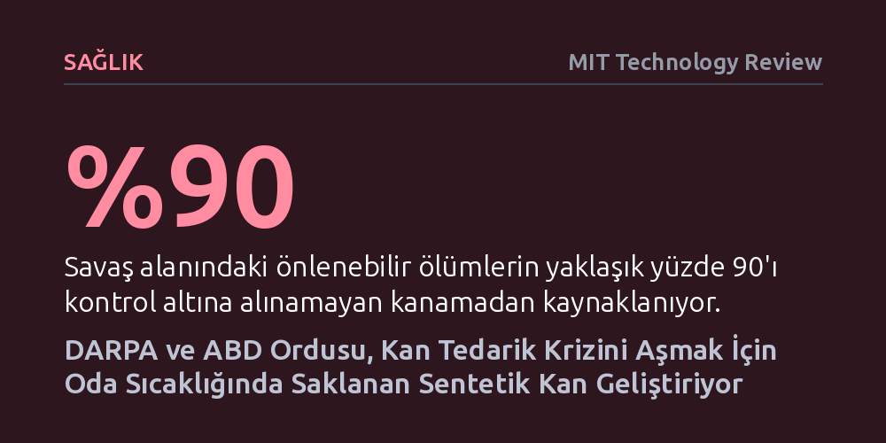

SAGLIK · MIT Technology Review · 2026-10-15
DARPA, kan kaybından kaynaklanan önlenebilir ölümleri durdurmak amacıyla dondurularak kurutulmuş ve oda sıcaklığında yıllarca bozulmayan sentetik kan bileşenleri geliştiriyor. 73 milyon dolarlık RAPIID programı, yapay alyuvar ve trombositleri 2029'a kadar klinik kullanıma ulaştırmayı hedefliyor.
Soğuk zincir ve bağışçı zorunluluğunu ortadan kaldıran raf ömrü uzun sentetik kan teknolojisi, hem çatışma alanlarında hem de sivil acil servislerde kan kaybına bağlı milyonlarca ölümü önleme potansiyeli taşıyor.

2007 yılında Irak'ta gündüz vakti düşürülen bir tahliye helikopteri ve yedi askerin ölümü, askeri tıbbın en çaresiz lojistik mecburiyetlerinden birini açığa çıkarmıştı: Helikopter bir çatışma bölgesine yaralı taşımak için değil, tükenen kan stoklarını yenilemek için havalanmıştı. Askeri jargonda 'kan seferi' olarak adlandırılan bu görevler, cephede en riskli operasyonlar arasında yer alıyor. Çünkü kan, canlı ve çabuk bozulan biyolojik yapısı nedeniyle cephede uzun süre saklanamıyor.
Doğal kanın en büyük kısıtı, soğutulduğunda bile yalnızca 35 gün dayanabilmesidir. Pıhtılaşmayı sağlayan trombositler oda sıcaklığında en fazla bir hafta yaşayabiliyor; dondurulan alyuvar ve plazma ise çözdürüldüğü andan itibaren birkaç gün içinde bozuluyor. Çatışmanın ya da acil durumun ne zaman yaşanacağını önceden kestiremeyen sağlık ekipleri için bu durum, ya çözülen kanın çöpe gitmesi ya da yaralıya zamanında ulaştırılamaması anlamına geliyor.
Sorun yalnızca askeri alanla da sınırlı değil; küresel bir halk sağlığı krizi söz konusu. Savaş alanındaki önlenebilir ölümlerin yüzde 90'ı aşırı kanamadan kaynaklandığı gibi, dünyadaki anne ölümlerinin de birinci sebebi kontrol edilemeyen kan kayıpları. Üstelik ağır travma geçiren bir hastanın hayatta kalabilmesi için naklin ilk 36 dakika içinde başlaması gerekiyor. Buna karşın ABD'de dahi acil kana muhtaç 1,2 milyon travma hastasının yalnızca yüzde 1'i hastaneye varmadan önce kan alabiliyor.
Kan yerine geçebilecek bir sıvı üretme arayışı yeni değil, ancak geçmişteki girişimler ağır felaketlerle sonuçlandı. Alyuvarların içinde oksijen taşıyan hemoglobin proteini, doğal bir hücre zarıyla korunmadığında dolaşım sisteminde hızla parçalanarak böbrek ve organ yetmezliğine yol açıyor. Daha da kötüsü, serbest kalan 'çıplak' hemoglobin, damarların genişlemesini sağlayan nitrik oksit molekülünü adeta yutarak kan damarlarının şiddetle büzülmesine ve tansiyonun ölümcül seviyelere fırlamasına neden oluyor.
Bu biyolojik engel, 1980 ve 1990'larda HIV bulaşma korkusuyla geliştirilen ilk nesil hemoglobin bazlı oksijen taşıyıcılarında (HBOC) net şekilde görüldü. HemAssist adı verilen ürün, klinik deneylerde 52 hastadan 24'ünün ölümüne yol açınca 1998'de apar topar rafa kaldırıldı. 2008'de yayımlanan kapsamlı bir klinik inceleme ise bu tür eski yapay kanların kalp krizi riskini üç katına çıkardığını ve ölüm oranını yüzde 30 artırdığını teyit ederek sektörü uzun süre duraklattı.
Daha yakın dönemde kök hücrelerden laboratuvarda kan üretme (kan çiftçiliği) projeleri denendi. Bu yöntem biyolojik açıdan güvenli olsa da ekonomik ve pratik çıkmazlara saplandı. Tek bir ünite kan üretmenin maliyeti on binlerce doları bulurken, elde edilen hücrelerin yine soğuk zincire ve buzdolaplarına muhtaç olması, sırt çantasında taşınabilir bir sahra çözümü arayan ordu için bu yaklaşımı işlevsiz kıldı.
Geçmişin başarısızlıklarından ders çıkaran araştırmacılar, alyuvarı bütünüyle üretmek yerine onun temel mekanizmasını yapay zarlarla paketleme yoluna gitti. KaloCyte şirketinin geliştirdiği ErythroMer adlı ürün, süresi dolmak üzere olan bağışçı kanlarındaki hemoglobini geri dönüştürüp mikroskobik yağ kürecikleri (lipid nanopartiküller) içine hapsediyor. Bu yapay zar, hemoglobini serbest dolaşımın yıkıcı etkilerinden korurken nitrik oksit emilimini de sınırlıyor.
ErythroMer'in içinde yer alan özel bir lipid molekülü, adeta akıllı bir kapı bekçisi gibi çalışıyor: Akciğerlerdeki yüksek pH ortamında oksijenin içeri girmesine izin veriyor; oksijene aç ve pH değeri düşük yaralı dokularda ise oksijeni serbest bırakıyor. Dondurularak kurutulan bu yapay alyuvar tozu, oda sıcaklığında iki yıl boyunca bozulmadan saklanabiliyor ve steril suyla karıştırıldığında anında kullanıma hazır hale geliyor. Ağır kan kaybı yaşayan hayvan deneylerinde, damarları büzmeden oksijen taşımayı ve tansiyonu dengelemeyi başardı.
Pıhtılaşmayı sağlayan trombosit tarafında ise Case Western Reserve Üniversitesi'nden biyomühendis Anirban Sen Gupta, SynthoPlate adını verdiği sentetik parçacığı geliştirdi. Sen Gupta trombositlerin rolünü açıklarken, \"Geleneksel olarak trombositler kan çimentosu gibi görülürdü, oysa damar duvarını sürekli gözetleyip hasar arayan dronlar gibidirler\" diyor. Bir İsviçre çakısını andıran bu nanoparçacık; hasarlı damar duvarına tutunan, kolajene bağlanan ve gerçek trombositlerle kenetlenen üç farklı peptid uca sahip. Üstelik oda sıcaklığında bir yılı aşkın, çöl sıcağında ise en az üç ay dayanabiliyor.
Sentetik kan arayışını yeniden alevlendiren en büyük etken, ABD ordusunun küresel askeri senaryolarındaki köklü değişim oldu. Okinawa adasındaki donanma üssünde görev yaparken kan tedarikinin ne denli kırılgan olduğunu gören fizyolog ve deniz subayı Robert Murray, koca Pasifik bölgesinin tek bir kan merkezine bağlı olduğunu fark etti. Olası bir füze saldırısında bu merkezin vurulması, binlerce kilometrelik bir alanda kan ikmalini bir anda durdurabilirdi.
2018 Ulusal Savunma Stratejisi ile odağın terörle mücadeleden Çin ve Rusya gibi büyük güçlerle çatışma ihtimaline kayması, savaş planlamacılarını çaresiz bıraktı. Geniş okyanus mesafelerinde helikopterlerle kan taşımak imkansızdı; askerlerin sırt çantasında bozulmadan taşınabilecek kan ürünleri şarttı. Bu doğrultuda başlatılan 73 milyon dolarlık RAPIID programı, plazma, trombosit ve alyuvarın kurutulmuş yapay versiyonlarını 2029 yılına kadar sahaya indirmeyi hedefliyor.
Murray, bu zorlu hedefe ulaşabilmek için yüklenici şirketler arasında bir tür eleme yarışı kurdu. Programa dahil edilen ekiplere yalnızca bir yıllık finansman garantisi veriliyor; hayvan deneylerini başarıyla geçen ve FDA standartlarına hızla uyum sağlayan teknolojiler ikinci ve üçüncü yılda insanlı klinik deneylere taşınacak. Amaç yalnızca tozu üretmek değil; sahra şartlarına uygun dayanıklı torbalar, sahada kan seviyesini ölçen parmak ucu testleri ve pille çalışan ısıtıcıları da içeren eksiksiz bir sistem kurmak.
DARPA'nın takvimi iddialı görünse de tıp camiasında ciddi çekinceler dile getiriliyor. California Üniversitesi'nden transfüzyon tıbbı uzmanı Dr. Shibani Pati, henüz insanda hiç denenmemiş SynthoPlate ve ErythroMer gibi sıfırdan tasarlanan moleküllere bel bağlanmasını riskli buluyor. Pati'ye göre, FDA onayı sürecinin aşırı uzun sürmesi muhtemel ve ordu bunun yerine insan üzerinde güvenliği kanıtlanmış dondurulmuş gerçek trombositler (Cellphire) veya sığır kaynaklı Hemopure gibi mevcut teknolojileri geliştirmeye odaklanmalıydı.
Bir diğer kritik soru işareti ise bu yapay bileşenlerin birlikte verildiğinde nasıl tepki vereceği. Doğal kan hücreleri tek bir işleve sahip değil; alyuvarlar pıhtılaşmaya destek olurken, trombositler iltihaplanmayı dengeliyor, plazma ise tüm bu dengeyi orkestra gibi yönetiyor. Travma uzmanı Dr. John Holcomb, laboratuvarda tek tek başarılı olan sentetik parçaların bir araya getirildiğinde doğal kanın bu çok yönlü uyumunu yakalayamayabileceği uyarısında bulunuyor.
Nitekim yapılan ilk hayvan testlerinde, tüm yapay bileşenlerden oluşan kokteylin genel sağlık göstergelerini iyileştirdiği ancak pıhtılaşma performansının doğal kanın biraz gerisinde kaldığı görüldü. Araştırmacılar bunun moleküllerin yüzeyindeki negatif yüklerin birbirini itmesinden kaynaklanabileceğini düşünüyor. Tüm bu engellere rağmen geliştiriciler, hiç kan bulunmayan acil bir durumda bu yapay kokteylin hayat kurtarıcı bir köprü olacağı görüşünde ısrarcı.